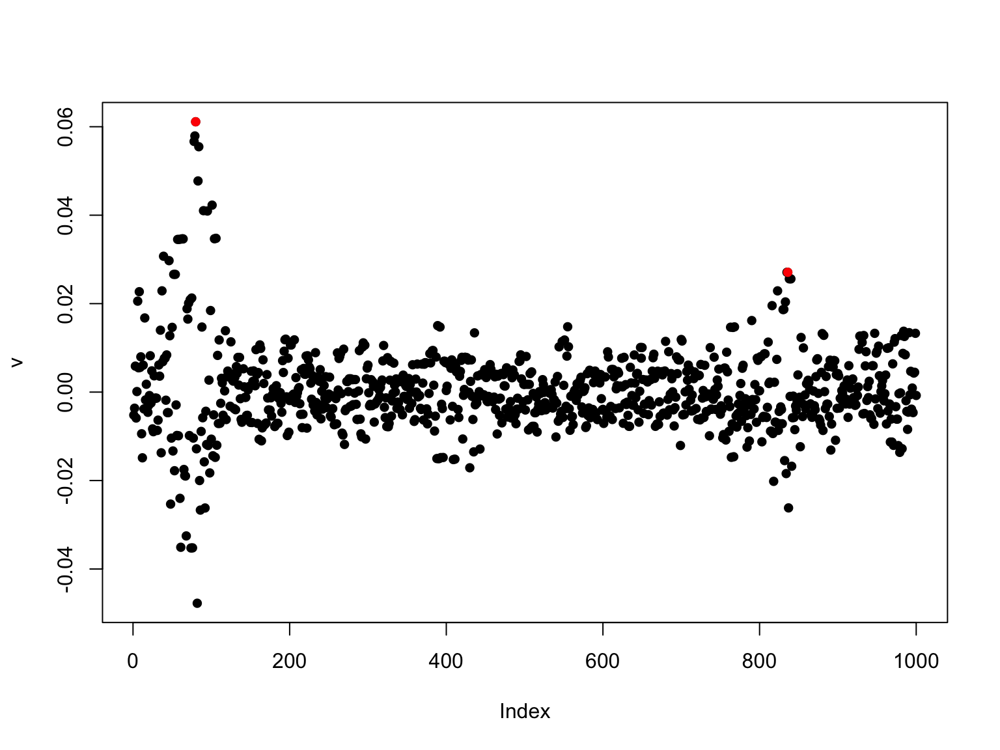
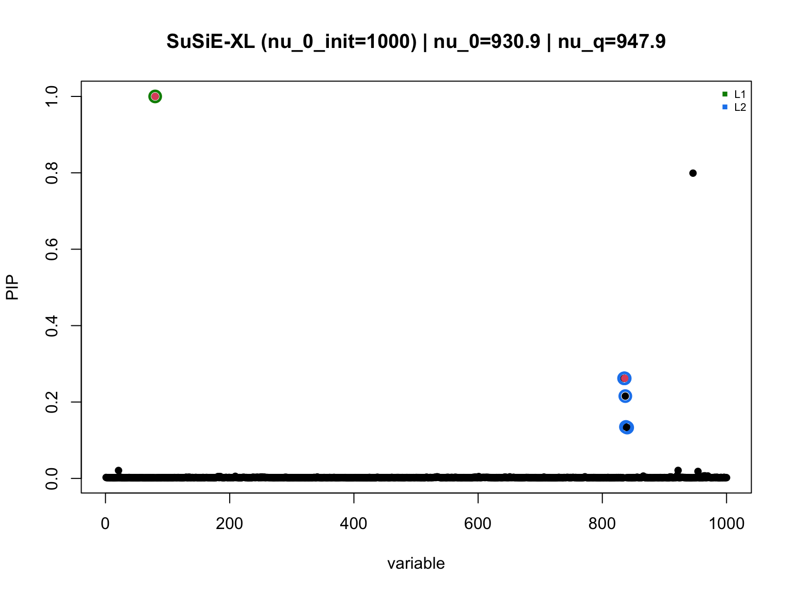
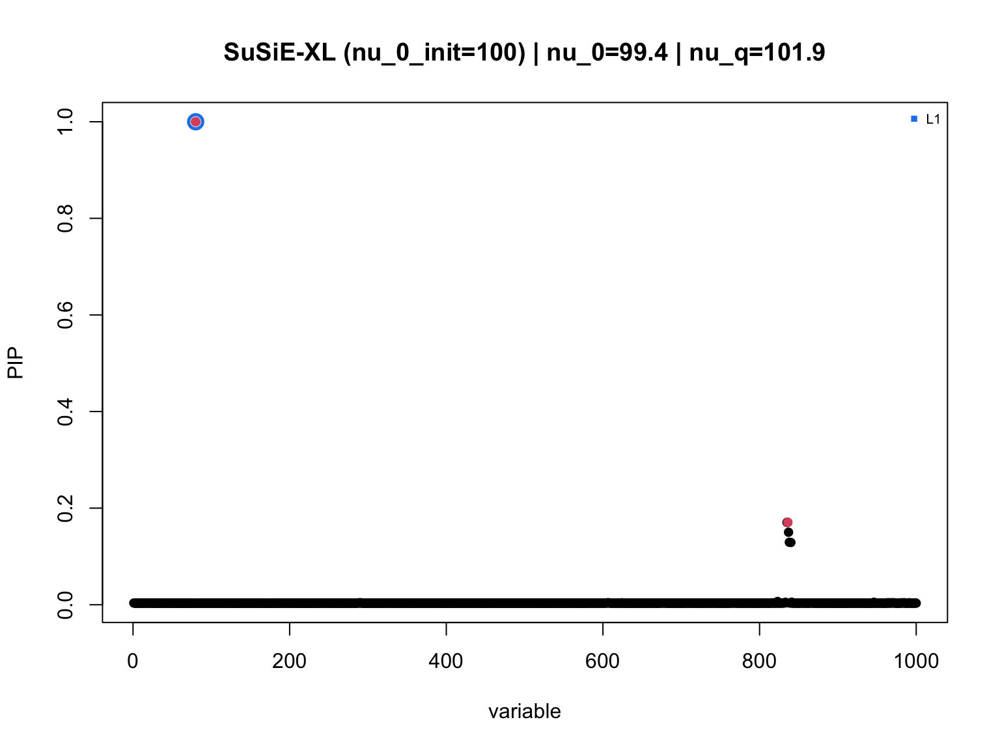
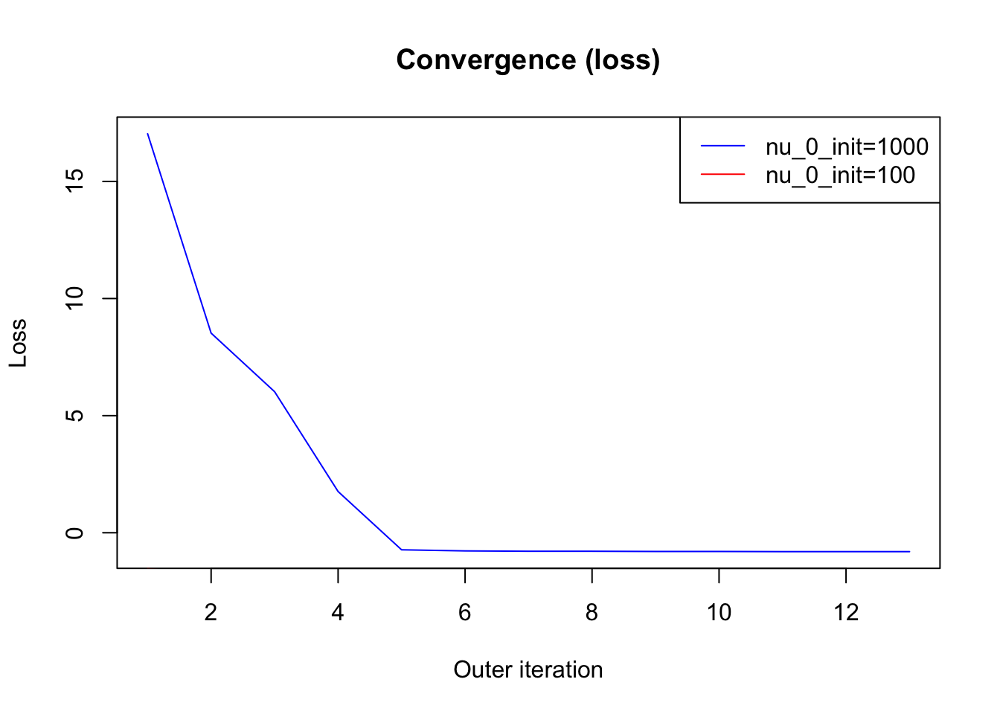
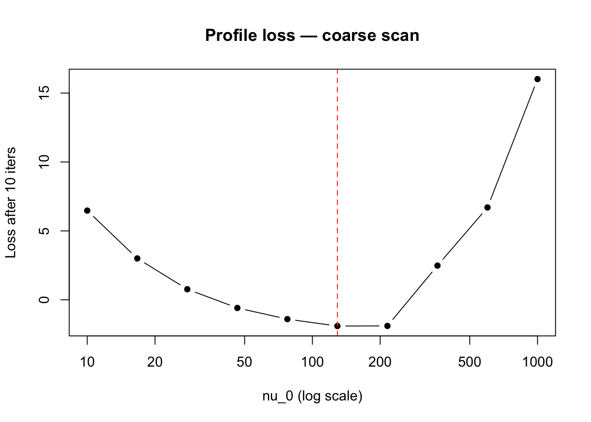
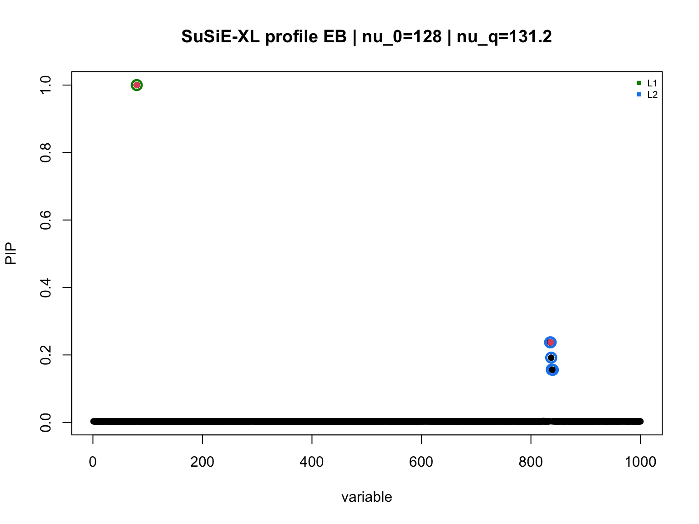
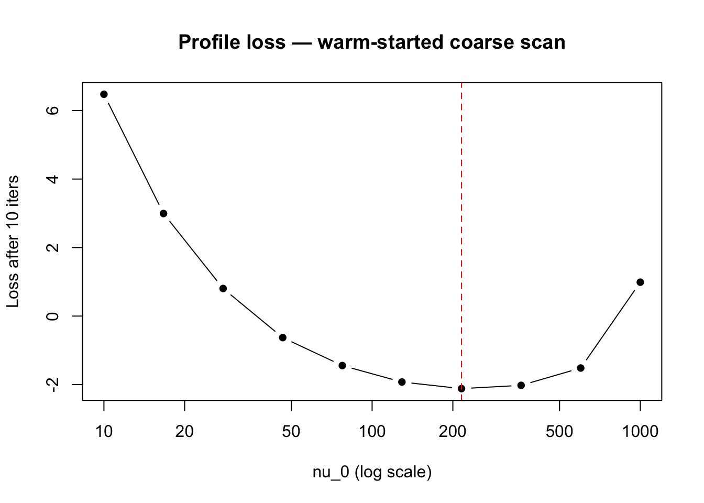
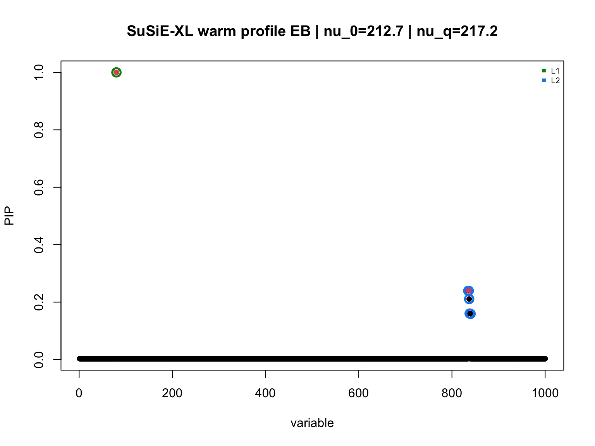

Last updated: 2026-06-15
Checks: 7 0
Knit directory: susie_love_experiments/
This reproducible R Markdown analysis was created with workflowr (version 1.7.1). The Checks tab describes the reproducibility checks that were applied when the results were created. The Past versions tab lists the development history.
Great! Since the R Markdown file has been committed to the Git repository, you know the exact version of the code that produced these results.
Great job! The global environment was empty. Objects defined in the global environment can affect the analysis in your R Markdown file in unknown ways. For reproduciblity it’s best to always run the code in an empty environment.
The command set.seed(20260419) was run prior to running
the code in the R Markdown file. Setting a seed ensures that any results
that rely on randomness, e.g. subsampling or permutations, are
reproducible.
Great job! Recording the operating system, R version, and package versions is critical for reproducibility.
Nice! There were no cached chunks for this analysis, so you can be confident that you successfully produced the results during this run.
Great job! Using relative paths to the files within your workflowr project makes it easier to run your code on other machines.
Great! You are using Git for version control. Tracking code development and connecting the code version to the results is critical for reproducibility.
The results in this page were generated with repository version 163ad86. See the Past versions tab to see a history of the changes made to the R Markdown and HTML files.
Note that you need to be careful to ensure that all relevant files for
the analysis have been committed to Git prior to generating the results
(you can use wflow_publish or
wflow_git_commit). workflowr only checks the R Markdown
file, but you know if there are other scripts or data files that it
depends on. Below is the status of the Git repository when the results
were generated:
Ignored files:
Ignored: .DS_Store
Ignored: .Rproj.user/
Ignored: analysis/.DS_Store
Untracked files:
Untracked: analysis/mismatch_fix_delta_approach.Rmd
Unstaged changes:
Modified: analysis/algorithmic-approach.Rmd
Modified: analysis/small_nu.Rmd
Note that any generated files, e.g. HTML, png, CSS, etc., are not included in this status report because it is ok for generated content to have uncommitted changes.
These are the previous versions of the repository in which changes were
made to the R Markdown
(analysis/test-new-optimization-delta-ver.Rmd) and HTML
(docs/test-new-optimization-delta-ver.html) files. If
you’ve configured a remote Git repository (see
?wflow_git_remote), click on the hyperlinks in the table
below to view the files as they were in that past version.
| File | Version | Author | Date | Message |
|---|---|---|---|---|
| Rmd | 163ad86 | dodat-stats | 2026-06-15 | added new file: optimizing nu0 using grid search |
Here we aim to still learn \(\nu_0\) using VEB while fixing \(\delta\) (i.e., $ = 1$). This is arguably the most principal approach, although the convergence of \(\nu_0\) is poorly (it rarely moves away from the intitial point). Therefore, in this workflowr, we seek alternative optimization approach.
Since optimizing \(\nu_0\) is only a
1D optimization problem, I plan to find it using a grid of \(\nu_0\). But a grid of 10 values of \(\nu_0\) would lead to an optimization
problem that is 10 times slower than susie-love-lambda.
After working with Claude, we decided the best solution is:
For each \(\nu_0\) in the grid,
fix \(\nu_0\) (turn
estimate_nu_0 to FALSE) and run the
optimization of other parameters in 10 iterations.
Choose the best \(\nu_0\) and call it the warm start for learning the optimal \(\nu_0\)
Start optimizing everything from this \(\nu_0\) (turn estimate_nu_0 to
TRUE).
So the total cost is only 10 (grid points) x 10 (iterations) + number of iterations in step 3. Not too bad. Let’s see how it work in the low mismatch scenario.
One more update is we changed the optimization of nu_0 and nu_q to log-scale. It works slightly better.
library(susielove)
seed <- 1
T_split <- 25
chrom <- "chr22"
start <- 20e6
end <- 21e6
N <- 25000L
N0 <- 200L
J <- 1000L
h2 <- 0.01
res <- sim_2pop(chrom, start, end,
T_split = T_split,
n_gwas = N,
n_ref = N0,
J = J,
h2 = h2,
seed = seed)
v <- res$v
R <- res$R
R0 <- res$R0
beta_true <- res$beta_true
causal_SNPs_loc <- res$causal_SNPs_loc
plot(v, pch = 16)
points(causal_SNPs_loc, v[causal_SNPs_loc], pch = 16, col = "red")
Diagonal correction to align out-of-sample diagonals with in-sample,
then set up shared inputs for susie_XL.
d0_inv_sqrt <- 1 / sqrt(diag(R0))
LD0 <- diag(d0_inv_sqrt) %*% R0 %*% diag(d0_inv_sqrt)
d_sqrt <- sqrt(diag(R))
R_tilde <- diag(d_sqrt) %*% LD0 %*% diag(d_sqrt)
diag_R <- diag(R)
R_out <- R_tilde
k <- min(N0, J)
delta <- 1e-1nu_0_init <- 1000
max_iter <- 20
XL_res_1000 <- susie_XL(v, R_out, diag_R,
delta,
N, L = 5,
k,
nu_0_init = nu_0_init,
max_iter_init = 100,
step_susie = 20,
step_R = 100,
estimate_nu_0 = TRUE,
estimate_delta = FALSE,
max_iter = max_iter,
tol = 1e-5)
#> Iter 1 | Loss: 17.0331 | nu_q: 1000.8 | nu_0: 976.8 | delta: 1.0000e-01
#> Iter 2 | Loss: 8.5234 | nu_q: 993.0 | nu_0: 969.5 | delta: 1.0000e-01
#> Iter 3 | Loss: 6.0227 | nu_q: 981.4 | nu_0: 956.0 | delta: 1.0000e-01
#> Iter 4 | Loss: 1.7603 | nu_q: 959.7 | nu_0: 943.3 | delta: 1.0000e-01
#> Iter 5 | Loss: -0.7281 | nu_q: 958.9 | nu_0: 942.9 | delta: 1.0000e-01
#> Iter 6 | Loss: -0.7751 | nu_q: 956.1 | nu_0: 939.8 | delta: 1.0000e-01
#> Iter 7 | Loss: -0.7898 | nu_q: 952.3 | nu_0: 936.1 | delta: 1.0000e-01
#> Iter 8 | Loss: -0.7899 | nu_q: 952.9 | nu_0: 936.0 | delta: 1.0000e-01
#> Iter 9 | Loss: -0.7995 | nu_q: 949.6 | nu_0: 933.0 | delta: 1.0000e-01
#> Iter 10 | Loss: -0.7996 | nu_q: 950.0 | nu_0: 932.9 | delta: 1.0000e-01
#> Iter 11 | Loss: -0.8062 | nu_q: 947.6 | nu_0: 930.9 | delta: 1.0000e-01
#> Iter 12 | Loss: -0.8062 | nu_q: 947.9 | nu_0: 930.9 | delta: 1.0000e-01
#> Iter 13 | Loss: -0.8062 | nu_q: 947.9 | nu_0: 930.9 | delta: 1.0000e-01
#> Converged at iteration 13
b_res <- XL_res_1000$b_res
R_q <- XL_res_1000$R_q
susie_plot_alpha(
alpha = b_res$alpha,
R = cov2cor(R_q),
b = beta_true,
main = paste0("SuSiE-XL (nu_0_init=1000) | nu_0=",
round(XL_res_1000$nu_0, 1),
" | nu_q=", round(XL_res_1000$nu_q, 1))
)
nu_0_init <- 100
max_iter <- 20
XL_res_100 <- susie_XL(v, R_out, diag_R,
delta,
N, L = 5,
k,
nu_0_init = nu_0_init,
max_iter_init = 500,
step_susie = 20,
step_R = 100,
estimate_nu_0 = TRUE,
estimate_delta = FALSE,
max_iter = max_iter,
tol = 1e-5)
#> Iter 1 | Loss: -1.5378 | nu_q: 100.5 | nu_0: 99.4 | delta: 1.0000e-01
#> Iter 2 | Loss: -1.7168 | nu_q: 100.8 | nu_0: 99.2 | delta: 1.0000e-01
#> Iter 3 | Loss: -1.7353 | nu_q: 101.1 | nu_0: 99.2 | delta: 1.0000e-01
#> Iter 4 | Loss: -1.7395 | nu_q: 101.4 | nu_0: 99.1 | delta: 1.0000e-01
#> Iter 5 | Loss: -1.7433 | nu_q: 101.7 | nu_0: 99.3 | delta: 1.0000e-01
#> Iter 6 | Loss: -1.7460 | nu_q: 101.9 | nu_0: 99.4 | delta: 1.0000e-01
#> Iter 7 | Loss: -1.7461 | nu_q: 101.9 | nu_0: 99.4 | delta: 1.0000e-01
#> Iter 8 | Loss: -1.7461 | nu_q: 101.9 | nu_0: 99.4 | delta: 1.0000e-01
#> Converged at iteration 8
b_res <- XL_res_100$b_res
R_q <- XL_res_100$R_q
susie_plot_alpha(
alpha = b_res$alpha,
R = cov2cor(R_q),
b = beta_true,
main = paste0("SuSiE-XL (nu_0_init=100) | nu_0=",
round(XL_res_100$nu_0, 1),
" | nu_q=", round(XL_res_100$nu_q, 1))
)
Check whether the two initializations now converge to the same nu_0 and nu_q.
cat("nu_0_init = 1000 -> nu_0:", round(XL_res_1000$nu_0, 2),
" | nu_q:", round(XL_res_1000$nu_q, 2),
" | iters:", length(XL_res_1000$loss_history), "\n")
#> nu_0_init = 1000 -> nu_0: 930.85 | nu_q: 947.93 | iters: 13
cat("nu_0_init = 100 -> nu_0:", round(XL_res_100$nu_0, 2),
" | nu_q:", round(XL_res_100$nu_q, 2),
" | iters:", length(XL_res_100$loss_history), "\n")
#> nu_0_init = 100 -> nu_0: 99.41 | nu_q: 101.93 | iters: 8
plot(XL_res_1000$loss_history, type = "l", col = "blue",
xlab = "Outer iteration", ylab = "Loss", main = "Convergence (loss)")
lines(XL_res_100$loss_history, col = "red")
legend("topright", legend = c("nu_0_init=1000", "nu_0_init=100"),
col = c("blue", "red"), lty = 1)
Conclusion: Optimal \(\nu_0\) highly depends on the initialization.
The log-space optimize() finds the right nu_0 for a
fixed R_q, but R_q itself was optimized for the current nu_0 — so the
two steps keep each other near the initialization (a CAVI fixed-point
coupling issue). The fix is a two-phase profile search: short runs
across a log-spaced grid to rank candidates cheaply, then one full run
warm-started from the best.
nu_0_grid <- exp(seq(log(10), log(5*N0), length.out = 10))
coarse_results <- lapply(nu_0_grid, function(nu_0_fixed) {
susie_XL(v, R_out, diag_R, delta, N, L = 5, k,
nu_0_init = nu_0_fixed,
estimate_nu_0 = FALSE,
max_iter_init = 100,
step_susie = 10,
step_R = 20,
max_iter = 10,
tol = -Inf)
})
#> Iter 1 | Loss: 11.7142 | nu_q: 10.4 | nu_0: 10.0 | delta: 1.0000e-01
#> Iter 2 | Loss: 8.2761 | nu_q: 10.5 | nu_0: 10.0 | delta: 1.0000e-01
#> Iter 3 | Loss: 7.4564 | nu_q: 10.6 | nu_0: 10.0 | delta: 1.0000e-01
#> Iter 4 | Loss: 7.1409 | nu_q: 10.6 | nu_0: 10.0 | delta: 1.0000e-01
#> Iter 5 | Loss: 6.9487 | nu_q: 10.8 | nu_0: 10.0 | delta: 1.0000e-01
#> Iter 6 | Loss: 6.8240 | nu_q: 10.8 | nu_0: 10.0 | delta: 1.0000e-01
#> Iter 7 | Loss: 6.7112 | nu_q: 10.9 | nu_0: 10.0 | delta: 1.0000e-01
#> Iter 8 | Loss: 6.6204 | nu_q: 11.0 | nu_0: 10.0 | delta: 1.0000e-01
#> Iter 9 | Loss: 6.5474 | nu_q: 11.1 | nu_0: 10.0 | delta: 1.0000e-01
#> Iter 10 | Loss: 6.4743 | nu_q: 11.2 | nu_0: 10.0 | delta: 1.0000e-01
#> Iter 1 | Loss: 7.1903 | nu_q: 17.1 | nu_0: 16.7 | delta: 1.0000e-01
#> Iter 2 | Loss: 4.4100 | nu_q: 17.2 | nu_0: 16.7 | delta: 1.0000e-01
#> Iter 3 | Loss: 3.7728 | nu_q: 17.3 | nu_0: 16.7 | delta: 1.0000e-01
#> Iter 4 | Loss: 3.4673 | nu_q: 17.4 | nu_0: 16.7 | delta: 1.0000e-01
#> Iter 5 | Loss: 3.2939 | nu_q: 17.5 | nu_0: 16.7 | delta: 1.0000e-01
#> Iter 6 | Loss: 3.1897 | nu_q: 17.6 | nu_0: 16.7 | delta: 1.0000e-01
#> Iter 7 | Loss: 3.1269 | nu_q: 17.7 | nu_0: 16.7 | delta: 1.0000e-01
#> Iter 8 | Loss: 3.0747 | nu_q: 17.8 | nu_0: 16.7 | delta: 1.0000e-01
#> Iter 9 | Loss: 3.0362 | nu_q: 17.8 | nu_0: 16.7 | delta: 1.0000e-01
#> Iter 10 | Loss: 3.0039 | nu_q: 17.9 | nu_0: 16.7 | delta: 1.0000e-01
#> Iter 1 | Loss: 4.5053 | nu_q: 28.3 | nu_0: 27.8 | delta: 1.0000e-01
#> Iter 2 | Loss: 2.0694 | nu_q: 28.4 | nu_0: 27.8 | delta: 1.0000e-01
#> Iter 3 | Loss: 1.4987 | nu_q: 28.5 | nu_0: 27.8 | delta: 1.0000e-01
#> Iter 4 | Loss: 1.1677 | nu_q: 28.7 | nu_0: 27.8 | delta: 1.0000e-01
#> Iter 5 | Loss: 0.9862 | nu_q: 28.7 | nu_0: 27.8 | delta: 1.0000e-01
#> Iter 6 | Loss: 0.8955 | nu_q: 28.9 | nu_0: 27.8 | delta: 1.0000e-01
#> Iter 7 | Loss: 0.8491 | nu_q: 29.0 | nu_0: 27.8 | delta: 1.0000e-01
#> Iter 8 | Loss: 0.8163 | nu_q: 29.1 | nu_0: 27.8 | delta: 1.0000e-01
#> Iter 9 | Loss: 0.7924 | nu_q: 29.2 | nu_0: 27.8 | delta: 1.0000e-01
#> Iter 10 | Loss: 0.7674 | nu_q: 29.3 | nu_0: 27.8 | delta: 1.0000e-01
#> Iter 1 | Loss: 1.7689 | nu_q: 47.0 | nu_0: 46.4 | delta: 1.0000e-01
#> Iter 2 | Loss: 0.4063 | nu_q: 47.1 | nu_0: 46.4 | delta: 1.0000e-01
#> Iter 3 | Loss: -0.0236 | nu_q: 47.2 | nu_0: 46.4 | delta: 1.0000e-01
#> Iter 4 | Loss: -0.2280 | nu_q: 47.3 | nu_0: 46.4 | delta: 1.0000e-01
#> Iter 5 | Loss: -0.3691 | nu_q: 47.4 | nu_0: 46.4 | delta: 1.0000e-01
#> Iter 6 | Loss: -0.4406 | nu_q: 47.5 | nu_0: 46.4 | delta: 1.0000e-01
#> Iter 7 | Loss: -0.4997 | nu_q: 47.6 | nu_0: 46.4 | delta: 1.0000e-01
#> Iter 8 | Loss: -0.5389 | nu_q: 47.7 | nu_0: 46.4 | delta: 1.0000e-01
#> Iter 9 | Loss: -0.5692 | nu_q: 47.9 | nu_0: 46.4 | delta: 1.0000e-01
#> Iter 10 | Loss: -0.5886 | nu_q: 47.9 | nu_0: 46.4 | delta: 1.0000e-01
#> Iter 1 | Loss: 1.0866 | nu_q: 78.2 | nu_0: 77.4 | delta: 1.0000e-01
#> Iter 2 | Loss: -0.5617 | nu_q: 78.2 | nu_0: 77.4 | delta: 1.0000e-01
#> Iter 3 | Loss: -0.9452 | nu_q: 78.3 | nu_0: 77.4 | delta: 1.0000e-01
#> Iter 4 | Loss: -1.1355 | nu_q: 78.4 | nu_0: 77.4 | delta: 1.0000e-01
#> Iter 5 | Loss: -1.2318 | nu_q: 78.5 | nu_0: 77.4 | delta: 1.0000e-01
#> Iter 6 | Loss: -1.2904 | nu_q: 78.7 | nu_0: 77.4 | delta: 1.0000e-01
#> Iter 7 | Loss: -1.3330 | nu_q: 78.8 | nu_0: 77.4 | delta: 1.0000e-01
#> Iter 8 | Loss: -1.3606 | nu_q: 78.9 | nu_0: 77.4 | delta: 1.0000e-01
#> Iter 9 | Loss: -1.3825 | nu_q: 79.0 | nu_0: 77.4 | delta: 1.0000e-01
#> Iter 10 | Loss: -1.3998 | nu_q: 79.1 | nu_0: 77.4 | delta: 1.0000e-01
#> Iter 1 | Loss: 0.0348 | nu_q: 130.2 | nu_0: 129.2 | delta: 1.0000e-01
#> Iter 2 | Loss: -1.1110 | nu_q: 130.2 | nu_0: 129.2 | delta: 1.0000e-01
#> Iter 3 | Loss: -1.5586 | nu_q: 130.3 | nu_0: 129.2 | delta: 1.0000e-01
#> Iter 4 | Loss: -1.6895 | nu_q: 130.4 | nu_0: 129.2 | delta: 1.0000e-01
#> Iter 5 | Loss: -1.7639 | nu_q: 130.5 | nu_0: 129.2 | delta: 1.0000e-01
#> Iter 6 | Loss: -1.8174 | nu_q: 130.6 | nu_0: 129.2 | delta: 1.0000e-01
#> Iter 7 | Loss: -1.8511 | nu_q: 130.8 | nu_0: 129.2 | delta: 1.0000e-01
#> Iter 8 | Loss: -1.8707 | nu_q: 130.9 | nu_0: 129.2 | delta: 1.0000e-01
#> Iter 9 | Loss: -1.8879 | nu_q: 131.1 | nu_0: 129.2 | delta: 1.0000e-01
#> Iter 10 | Loss: -1.9012 | nu_q: 131.2 | nu_0: 129.2 | delta: 1.0000e-01
#> Iter 1 | Loss: 2.4854 | nu_q: 215.1 | nu_0: 215.4 | delta: 1.0000e-01
#> Iter 2 | Loss: 1.9022 | nu_q: 215.0 | nu_0: 215.4 | delta: 1.0000e-01
#> Iter 3 | Loss: 1.6168 | nu_q: 215.0 | nu_0: 215.4 | delta: 1.0000e-01
#> Iter 4 | Loss: 1.3230 | nu_q: 214.9 | nu_0: 215.4 | delta: 1.0000e-01
#> Iter 5 | Loss: 1.0382 | nu_q: 214.9 | nu_0: 215.4 | delta: 1.0000e-01
#> Iter 6 | Loss: 0.6824 | nu_q: 215.0 | nu_0: 215.4 | delta: 1.0000e-01
#> Iter 7 | Loss: 0.2346 | nu_q: 215.1 | nu_0: 215.4 | delta: 1.0000e-01
#> Iter 8 | Loss: -0.3293 | nu_q: 215.1 | nu_0: 215.4 | delta: 1.0000e-01
#> Iter 9 | Loss: -1.2133 | nu_q: 215.4 | nu_0: 215.4 | delta: 1.0000e-01
#> Iter 10 | Loss: -1.8927 | nu_q: 215.6 | nu_0: 215.4 | delta: 1.0000e-01
#> Iter 1 | Loss: 8.7990 | nu_q: 361.4 | nu_0: 359.4 | delta: 1.0000e-01
#> Iter 2 | Loss: 7.5182 | nu_q: 361.7 | nu_0: 359.4 | delta: 1.0000e-01
#> Iter 3 | Loss: 6.0152 | nu_q: 361.7 | nu_0: 359.4 | delta: 1.0000e-01
#> Iter 4 | Loss: 5.0514 | nu_q: 361.4 | nu_0: 359.4 | delta: 1.0000e-01
#> Iter 5 | Loss: 4.6125 | nu_q: 361.5 | nu_0: 359.4 | delta: 1.0000e-01
#> Iter 6 | Loss: 3.9409 | nu_q: 361.1 | nu_0: 359.4 | delta: 1.0000e-01
#> Iter 7 | Loss: 2.9134 | nu_q: 361.2 | nu_0: 359.4 | delta: 1.0000e-01
#> Iter 8 | Loss: 2.7546 | nu_q: 361.5 | nu_0: 359.4 | delta: 1.0000e-01
#> Iter 9 | Loss: 2.6316 | nu_q: 361.1 | nu_0: 359.4 | delta: 1.0000e-01
#> Iter 10 | Loss: 2.4829 | nu_q: 361.3 | nu_0: 359.4 | delta: 1.0000e-01
#> Iter 1 | Loss: 19.3964 | nu_q: 614.7 | nu_0: 599.5 | delta: 1.0000e-01
#> Iter 2 | Loss: 17.1647 | nu_q: 615.2 | nu_0: 599.5 | delta: 1.0000e-01
#> Iter 3 | Loss: 14.6744 | nu_q: 614.2 | nu_0: 599.5 | delta: 1.0000e-01
#> Iter 4 | Loss: 12.6207 | nu_q: 613.9 | nu_0: 599.5 | delta: 1.0000e-01
#> Iter 5 | Loss: 10.7680 | nu_q: 613.9 | nu_0: 599.5 | delta: 1.0000e-01
#> Iter 6 | Loss: 10.0718 | nu_q: 613.4 | nu_0: 599.5 | delta: 1.0000e-01
#> Iter 7 | Loss: 9.1469 | nu_q: 612.9 | nu_0: 599.5 | delta: 1.0000e-01
#> Iter 8 | Loss: 8.3162 | nu_q: 612.2 | nu_0: 599.5 | delta: 1.0000e-01
#> Iter 9 | Loss: 7.6206 | nu_q: 611.9 | nu_0: 599.5 | delta: 1.0000e-01
#> Iter 10 | Loss: 6.7013 | nu_q: 611.0 | nu_0: 599.5 | delta: 1.0000e-01
#> Iter 1 | Loss: 34.4851 | nu_q: 1019.4 | nu_0: 1000.0 | delta: 1.0000e-01
#> Iter 2 | Loss: 32.3739 | nu_q: 1021.3 | nu_0: 1000.0 | delta: 1.0000e-01
#> Iter 3 | Loss: 30.8694 | nu_q: 1019.1 | nu_0: 1000.0 | delta: 1.0000e-01
#> Iter 4 | Loss: 29.5665 | nu_q: 1019.0 | nu_0: 1000.0 | delta: 1.0000e-01
#> Iter 5 | Loss: 27.4421 | nu_q: 1017.4 | nu_0: 1000.0 | delta: 1.0000e-01
#> Iter 6 | Loss: 24.9870 | nu_q: 1015.8 | nu_0: 1000.0 | delta: 1.0000e-01
#> Iter 7 | Loss: 22.0980 | nu_q: 1016.5 | nu_0: 1000.0 | delta: 1.0000e-01
#> Iter 8 | Loss: 19.2120 | nu_q: 1015.4 | nu_0: 1000.0 | delta: 1.0000e-01
#> Iter 9 | Loss: 17.8105 | nu_q: 1015.1 | nu_0: 1000.0 | delta: 1.0000e-01
#> Iter 10 | Loss: 16.0138 | nu_q: 1015.9 | nu_0: 1000.0 | delta: 1.0000e-01
coarse_loss <- sapply(coarse_results, function(r) tail(r$loss_history, 1))
best_idx <- which.min(coarse_loss)
plot(nu_0_grid, coarse_loss, log = "x", type = "b", pch = 16,
xlab = "nu_0 (log scale)", ylab = "Loss after 10 iters",
main = "Profile loss — coarse scan")
abline(v = nu_0_grid[best_idx], col = "red", lty = 2)
cat("Best nu_0 on grid:", round(nu_0_grid[best_idx], 2),
"| coarse loss:", round(coarse_loss[best_idx], 4), "\n")
#> Best nu_0 on grid: 129.15 | coarse loss: -1.9012best_res <- susie_XL(v, R_out, diag_R, delta, N, L = 5, k,
nu_0_init = nu_0_grid[best_idx],
z_init = coarse_results[[best_idx]]$Z_final,
estimate_nu_0 = TRUE,
max_iter_init = 100,
step_susie = 10,
n_inner = 5,
step_R = 50,
max_iter = 100,
tol = 1e-4)
#> Iter 1 | Loss: -1.9410 | nu_q: 130.7 | nu_0: 127.7 | delta: 1.0000e-01
#> Iter 2 | Loss: -1.9459 | nu_q: 131.2 | nu_0: 128.0 | delta: 1.0000e-01
#> Iter 3 | Loss: -1.9460 | nu_q: 131.2 | nu_0: 128.0 | delta: 1.0000e-01
#> Converged at iteration 3
cat("Converged loss:", round(tail(best_res$loss_history, 1), 4),
"| nu_0:", round(best_res$nu_0, 2),
"| nu_q:", round(best_res$nu_q, 2),
"| iters:", length(best_res$loss_history), "\n")
#> Converged loss: -1.946 | nu_0: 127.99 | nu_q: 131.19 | iters: 3
susie_plot_alpha(
alpha = best_res$b_res$alpha,
R = cov2cor(best_res$R_q),
b = beta_true,
main = paste0("SuSiE-XL profile EB | nu_0=", round(best_res$nu_0, 1),
" | nu_q=", round(best_res$nu_q, 1))
)
In section 6 the 10-iteration budget is spent mostly on the initial
transient because each grid point starts cold. Here we chain the grid
runs: each point is warm-started with Z_final from its left
neighbour, so the transient is already past and the 10 iterations
reflect the actual profile loss.
nu_0_grid_w <- exp(seq(log(10), log(5*N0), length.out = 10))
coarse_results_w <- vector("list", length(nu_0_grid_w))
z_prev <- NULL
for (i in seq_along(nu_0_grid_w)) {
coarse_results_w[[i]] <- susie_XL(v, R_out, diag_R, delta, N, L = 5, k,
nu_0_init = nu_0_grid_w[i],
z_init = z_prev,
estimate_nu_0 = FALSE,
max_iter_init = 100,
step_susie = 10,
step_R = 20,
max_iter = 10,
tol = -Inf)
z_prev <- coarse_results_w[[i]]$Z_final
}
#> Iter 1 | Loss: 11.7142 | nu_q: 10.4 | nu_0: 10.0 | delta: 1.0000e-01
#> Iter 2 | Loss: 8.2761 | nu_q: 10.5 | nu_0: 10.0 | delta: 1.0000e-01
#> Iter 3 | Loss: 7.4564 | nu_q: 10.6 | nu_0: 10.0 | delta: 1.0000e-01
#> Iter 4 | Loss: 7.1409 | nu_q: 10.6 | nu_0: 10.0 | delta: 1.0000e-01
#> Iter 5 | Loss: 6.9487 | nu_q: 10.8 | nu_0: 10.0 | delta: 1.0000e-01
#> Iter 6 | Loss: 6.8240 | nu_q: 10.8 | nu_0: 10.0 | delta: 1.0000e-01
#> Iter 7 | Loss: 6.7112 | nu_q: 10.9 | nu_0: 10.0 | delta: 1.0000e-01
#> Iter 8 | Loss: 6.6204 | nu_q: 11.0 | nu_0: 10.0 | delta: 1.0000e-01
#> Iter 9 | Loss: 6.5474 | nu_q: 11.1 | nu_0: 10.0 | delta: 1.0000e-01
#> Iter 10 | Loss: 6.4743 | nu_q: 11.2 | nu_0: 10.0 | delta: 1.0000e-01
#> Iter 1 | Loss: 4.7428 | nu_q: 16.7 | nu_0: 16.7 | delta: 1.0000e-01
#> Iter 2 | Loss: 3.5051 | nu_q: 16.9 | nu_0: 16.7 | delta: 1.0000e-01
#> Iter 3 | Loss: 3.3442 | nu_q: 17.0 | nu_0: 16.7 | delta: 1.0000e-01
#> Iter 4 | Loss: 3.2618 | nu_q: 17.2 | nu_0: 16.7 | delta: 1.0000e-01
#> Iter 5 | Loss: 3.2074 | nu_q: 17.3 | nu_0: 16.7 | delta: 1.0000e-01
#> Iter 6 | Loss: 3.1527 | nu_q: 17.4 | nu_0: 16.7 | delta: 1.0000e-01
#> Iter 7 | Loss: 3.1141 | nu_q: 17.5 | nu_0: 16.7 | delta: 1.0000e-01
#> Iter 8 | Loss: 3.0698 | nu_q: 17.6 | nu_0: 16.7 | delta: 1.0000e-01
#> Iter 9 | Loss: 3.0332 | nu_q: 17.7 | nu_0: 16.7 | delta: 1.0000e-01
#> Iter 10 | Loss: 2.9933 | nu_q: 17.9 | nu_0: 16.7 | delta: 1.0000e-01
#> Iter 1 | Loss: 1.8896 | nu_q: 27.4 | nu_0: 27.8 | delta: 1.0000e-01
#> Iter 2 | Loss: 1.1498 | nu_q: 27.6 | nu_0: 27.8 | delta: 1.0000e-01
#> Iter 3 | Loss: 1.0158 | nu_q: 27.8 | nu_0: 27.8 | delta: 1.0000e-01
#> Iter 4 | Loss: 0.9563 | nu_q: 27.9 | nu_0: 27.8 | delta: 1.0000e-01
#> Iter 5 | Loss: 0.9211 | nu_q: 28.1 | nu_0: 27.8 | delta: 1.0000e-01
#> Iter 6 | Loss: 0.8909 | nu_q: 28.2 | nu_0: 27.8 | delta: 1.0000e-01
#> Iter 7 | Loss: 0.8630 | nu_q: 28.4 | nu_0: 27.8 | delta: 1.0000e-01
#> Iter 8 | Loss: 0.8398 | nu_q: 28.5 | nu_0: 27.8 | delta: 1.0000e-01
#> Iter 9 | Loss: 0.8209 | nu_q: 28.6 | nu_0: 27.8 | delta: 1.0000e-01
#> Iter 10 | Loss: 0.8048 | nu_q: 28.7 | nu_0: 27.8 | delta: 1.0000e-01
#> Iter 1 | Loss: 0.3749 | nu_q: 46.5 | nu_0: 46.4 | delta: 1.0000e-01
#> Iter 2 | Loss: -0.3984 | nu_q: 46.7 | nu_0: 46.4 | delta: 1.0000e-01
#> Iter 3 | Loss: -0.5169 | nu_q: 46.9 | nu_0: 46.4 | delta: 1.0000e-01
#> Iter 4 | Loss: -0.5515 | nu_q: 47.0 | nu_0: 46.4 | delta: 1.0000e-01
#> Iter 5 | Loss: -0.5758 | nu_q: 47.2 | nu_0: 46.4 | delta: 1.0000e-01
#> Iter 6 | Loss: -0.5902 | nu_q: 47.2 | nu_0: 46.4 | delta: 1.0000e-01
#> Iter 7 | Loss: -0.6034 | nu_q: 47.4 | nu_0: 46.4 | delta: 1.0000e-01
#> Iter 8 | Loss: -0.6112 | nu_q: 47.5 | nu_0: 46.4 | delta: 1.0000e-01
#> Iter 9 | Loss: -0.6235 | nu_q: 47.7 | nu_0: 46.4 | delta: 1.0000e-01
#> Iter 10 | Loss: -0.6287 | nu_q: 47.8 | nu_0: 46.4 | delta: 1.0000e-01
#> Iter 1 | Loss: -0.6966 | nu_q: 76.6 | nu_0: 77.4 | delta: 1.0000e-01
#> Iter 2 | Loss: -1.2110 | nu_q: 76.9 | nu_0: 77.4 | delta: 1.0000e-01
#> Iter 3 | Loss: -1.3152 | nu_q: 77.1 | nu_0: 77.4 | delta: 1.0000e-01
#> Iter 4 | Loss: -1.3660 | nu_q: 77.2 | nu_0: 77.4 | delta: 1.0000e-01
#> Iter 5 | Loss: -1.3934 | nu_q: 77.4 | nu_0: 77.4 | delta: 1.0000e-01
#> Iter 6 | Loss: -1.4102 | nu_q: 77.5 | nu_0: 77.4 | delta: 1.0000e-01
#> Iter 7 | Loss: -1.4247 | nu_q: 77.8 | nu_0: 77.4 | delta: 1.0000e-01
#> Iter 8 | Loss: -1.4327 | nu_q: 77.9 | nu_0: 77.4 | delta: 1.0000e-01
#> Iter 9 | Loss: -1.4396 | nu_q: 78.1 | nu_0: 77.4 | delta: 1.0000e-01
#> Iter 10 | Loss: -1.4444 | nu_q: 78.2 | nu_0: 77.4 | delta: 1.0000e-01
#> Iter 1 | Loss: -1.2729 | nu_q: 128.7 | nu_0: 129.2 | delta: 1.0000e-01
#> Iter 2 | Loss: -1.6788 | nu_q: 128.9 | nu_0: 129.2 | delta: 1.0000e-01
#> Iter 3 | Loss: -1.7992 | nu_q: 129.1 | nu_0: 129.2 | delta: 1.0000e-01
#> Iter 4 | Loss: -1.8514 | nu_q: 129.2 | nu_0: 129.2 | delta: 1.0000e-01
#> Iter 5 | Loss: -1.8804 | nu_q: 129.4 | nu_0: 129.2 | delta: 1.0000e-01
#> Iter 6 | Loss: -1.9000 | nu_q: 129.5 | nu_0: 129.2 | delta: 1.0000e-01
#> Iter 7 | Loss: -1.9106 | nu_q: 129.7 | nu_0: 129.2 | delta: 1.0000e-01
#> Iter 8 | Loss: -1.9166 | nu_q: 129.8 | nu_0: 129.2 | delta: 1.0000e-01
#> Iter 9 | Loss: -1.9212 | nu_q: 130.0 | nu_0: 129.2 | delta: 1.0000e-01
#> Iter 10 | Loss: -1.9246 | nu_q: 130.1 | nu_0: 129.2 | delta: 1.0000e-01
#> Iter 1 | Loss: -0.8049 | nu_q: 212.9 | nu_0: 215.4 | delta: 1.0000e-01
#> Iter 2 | Loss: -1.7709 | nu_q: 213.1 | nu_0: 215.4 | delta: 1.0000e-01
#> Iter 3 | Loss: -1.9057 | nu_q: 213.4 | nu_0: 215.4 | delta: 1.0000e-01
#> Iter 4 | Loss: -1.9855 | nu_q: 213.5 | nu_0: 215.4 | delta: 1.0000e-01
#> Iter 5 | Loss: -2.0338 | nu_q: 213.7 | nu_0: 215.4 | delta: 1.0000e-01
#> Iter 6 | Loss: -2.0724 | nu_q: 214.2 | nu_0: 215.4 | delta: 1.0000e-01
#> Iter 7 | Loss: -2.0934 | nu_q: 214.3 | nu_0: 215.4 | delta: 1.0000e-01
#> Iter 8 | Loss: -2.1065 | nu_q: 214.8 | nu_0: 215.4 | delta: 1.0000e-01
#> Iter 9 | Loss: -2.1123 | nu_q: 214.9 | nu_0: 215.4 | delta: 1.0000e-01
#> Iter 10 | Loss: -2.1172 | nu_q: 215.2 | nu_0: 215.4 | delta: 1.0000e-01
#> Iter 1 | Loss: 0.0680 | nu_q: 359.7 | nu_0: 359.4 | delta: 1.0000e-01
#> Iter 2 | Loss: -1.4341 | nu_q: 358.3 | nu_0: 359.4 | delta: 1.0000e-01
#> Iter 3 | Loss: -1.7472 | nu_q: 358.8 | nu_0: 359.4 | delta: 1.0000e-01
#> Iter 4 | Loss: -1.8511 | nu_q: 358.8 | nu_0: 359.4 | delta: 1.0000e-01
#> Iter 5 | Loss: -1.9074 | nu_q: 358.9 | nu_0: 359.4 | delta: 1.0000e-01
#> Iter 6 | Loss: -1.9461 | nu_q: 359.0 | nu_0: 359.4 | delta: 1.0000e-01
#> Iter 7 | Loss: -1.9778 | nu_q: 359.2 | nu_0: 359.4 | delta: 1.0000e-01
#> Iter 8 | Loss: -1.9979 | nu_q: 359.3 | nu_0: 359.4 | delta: 1.0000e-01
#> Iter 9 | Loss: -2.0123 | nu_q: 359.5 | nu_0: 359.4 | delta: 1.0000e-01
#> Iter 10 | Loss: -2.0219 | nu_q: 359.6 | nu_0: 359.4 | delta: 1.0000e-01
#> Iter 1 | Loss: 2.1059 | nu_q: 600.1 | nu_0: 599.5 | delta: 1.0000e-01
#> Iter 2 | Loss: -0.1974 | nu_q: 596.0 | nu_0: 599.5 | delta: 1.0000e-01
#> Iter 3 | Loss: -0.9378 | nu_q: 596.6 | nu_0: 599.5 | delta: 1.0000e-01
#> Iter 4 | Loss: -1.2374 | nu_q: 596.4 | nu_0: 599.5 | delta: 1.0000e-01
#> Iter 5 | Loss: -1.3436 | nu_q: 596.9 | nu_0: 599.5 | delta: 1.0000e-01
#> Iter 6 | Loss: -1.4010 | nu_q: 596.7 | nu_0: 599.5 | delta: 1.0000e-01
#> Iter 7 | Loss: -1.4377 | nu_q: 597.1 | nu_0: 599.5 | delta: 1.0000e-01
#> Iter 8 | Loss: -1.4675 | nu_q: 597.0 | nu_0: 599.5 | delta: 1.0000e-01
#> Iter 9 | Loss: -1.4909 | nu_q: 597.3 | nu_0: 599.5 | delta: 1.0000e-01
#> Iter 10 | Loss: -1.5164 | nu_q: 597.4 | nu_0: 599.5 | delta: 1.0000e-01
#> Iter 1 | Loss: 13.8447 | nu_q: 868.6 | nu_0: 1000.0 | delta: 1.0000e-01
#> Iter 2 | Loss: 4.6377 | nu_q: 851.9 | nu_0: 1000.0 | delta: 1.0000e-01
#> Iter 3 | Loss: 3.0818 | nu_q: 854.0 | nu_0: 1000.0 | delta: 1.0000e-01
#> Iter 4 | Loss: 2.4939 | nu_q: 856.0 | nu_0: 1000.0 | delta: 1.0000e-01
#> Iter 5 | Loss: 2.1675 | nu_q: 860.2 | nu_0: 1000.0 | delta: 1.0000e-01
#> Iter 6 | Loss: 1.9006 | nu_q: 865.5 | nu_0: 1000.0 | delta: 1.0000e-01
#> Iter 7 | Loss: 1.6997 | nu_q: 868.4 | nu_0: 1000.0 | delta: 1.0000e-01
#> Iter 8 | Loss: 1.4849 | nu_q: 875.3 | nu_0: 1000.0 | delta: 1.0000e-01
#> Iter 9 | Loss: 1.2918 | nu_q: 877.9 | nu_0: 1000.0 | delta: 1.0000e-01
#> Iter 10 | Loss: 0.9888 | nu_q: 891.5 | nu_0: 1000.0 | delta: 1.0000e-01
coarse_loss_w <- sapply(coarse_results_w, function(r) tail(r$loss_history, 1))
best_idx_w <- which.min(coarse_loss_w)
plot(nu_0_grid_w, coarse_loss_w, log = "x", type = "b", pch = 16,
xlab = "nu_0 (log scale)", ylab = "Loss after 10 iters",
main = "Profile loss — warm-started coarse scan")
abline(v = nu_0_grid_w[best_idx_w], col = "red", lty = 2)
cat("Best nu_0 on grid:", round(nu_0_grid_w[best_idx_w], 2),
"| coarse loss:", round(coarse_loss_w[best_idx_w], 4), "\n")
#> Best nu_0 on grid: 215.44 | coarse loss: -2.1172best_res_w <- susie_XL(v, R_out, diag_R, delta, N, L = 5, k,
nu_0_init = nu_0_grid_w[best_idx_w],
z_init = coarse_results_w[[best_idx_w]]$Z_final,
estimate_nu_0 = TRUE,
max_iter_init = 100,
step_susie = 20,
step_R = 50,
max_iter = 100,
tol = 1e-4)
#> Iter 1 | Loss: -2.1364 | nu_q: 216.5 | nu_0: 213.9 | delta: 1.0000e-01
#> Iter 2 | Loss: -2.1423 | nu_q: 216.8 | nu_0: 213.0 | delta: 1.0000e-01
#> Iter 3 | Loss: -2.1456 | nu_q: 217.1 | nu_0: 212.8 | delta: 1.0000e-01
#> Iter 4 | Loss: -2.1466 | nu_q: 217.2 | nu_0: 212.7 | delta: 1.0000e-01
#> Iter 5 | Loss: -2.1466 | nu_q: 217.2 | nu_0: 212.7 | delta: 1.0000e-01
#> Converged at iteration 5
cat("Converged loss:", round(tail(best_res_w$loss_history, 1), 4),
"| nu_0:", round(best_res_w$nu_0, 2),
"| nu_q:", round(best_res_w$nu_q, 2),
"| iters:", length(best_res_w$loss_history), "\n")
#> Converged loss: -2.1466 | nu_0: 212.66 | nu_q: 217.22 | iters: 5
susie_plot_alpha(
alpha = best_res_w$b_res$alpha,
R = cov2cor(best_res_w$R_q),
b = beta_true,
main = paste0("SuSiE-XL warm profile EB | nu_0=", round(best_res_w$nu_0, 1),
" | nu_q=", round(best_res_w$nu_q, 1))
)
sessionInfo()
#> R version 4.3.2 (2023-10-31)
#> Platform: aarch64-apple-darwin20 (64-bit)
#> Running under: macOS 26.2
#>
#> Matrix products: default
#> BLAS: /System/Library/Frameworks/Accelerate.framework/Versions/A/Frameworks/vecLib.framework/Versions/A/libBLAS.dylib
#> LAPACK: /Library/Frameworks/R.framework/Versions/4.3-arm64/Resources/lib/libRlapack.dylib; LAPACK version 3.11.0
#>
#> locale:
#> [1] en_US.UTF-8/en_US.UTF-8/en_US.UTF-8/C/en_US.UTF-8/en_US.UTF-8
#>
#> time zone: America/New_York
#> tzcode source: internal
#>
#> attached base packages:
#> [1] stats graphics grDevices utils datasets methods base
#>
#> other attached packages:
#> [1] susielove_0.1.0 workflowr_1.7.1
#>
#> loaded via a namespace (and not attached):
#> [1] Matrix_1.6-1.1 jsonlite_2.0.0 compiler_4.3.2 promises_1.5.0
#> [5] Rcpp_1.1.0 stringr_1.6.0 git2r_0.36.2 callr_3.7.6
#> [9] later_1.4.2 jquerylib_0.1.4 png_0.1-8 yaml_2.3.10
#> [13] fastmap_1.2.0 lattice_0.22-7 reticulate_1.42.0 R6_2.6.1
#> [17] knitr_1.50 tibble_3.3.0 rprojroot_2.1.1 bslib_0.9.0
#> [21] pillar_1.11.1 rlang_1.1.6 cachem_1.1.0 stringi_1.8.7
#> [25] httpuv_1.6.16 xfun_0.52 getPass_0.2-4 fs_1.6.6
#> [29] sass_0.4.10 otel_0.2.0 cli_3.6.5 withr_3.0.2
#> [33] magrittr_2.0.3 ps_1.9.1 grid_4.3.2 digest_0.6.39
#> [37] processx_3.8.6 rstudioapi_0.17.1 lifecycle_1.0.4 vctrs_0.6.5
#> [41] evaluate_1.0.5 glue_1.8.0 whisker_0.4.1 rmarkdown_2.29
#> [45] httr_1.4.7 tools_4.3.2 pkgconfig_2.0.3 htmltools_0.5.8.1